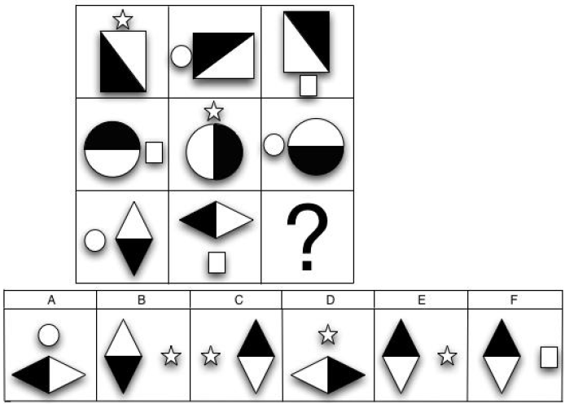
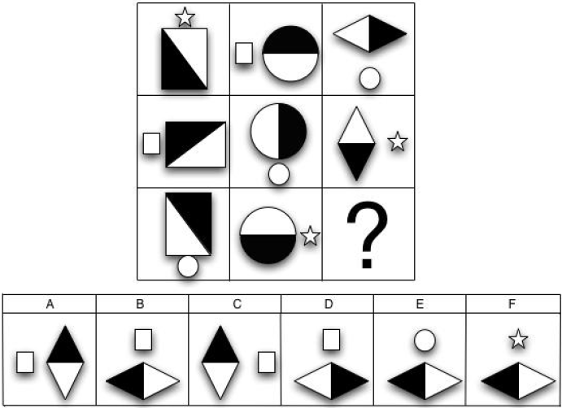
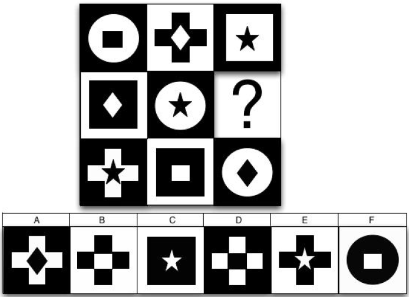
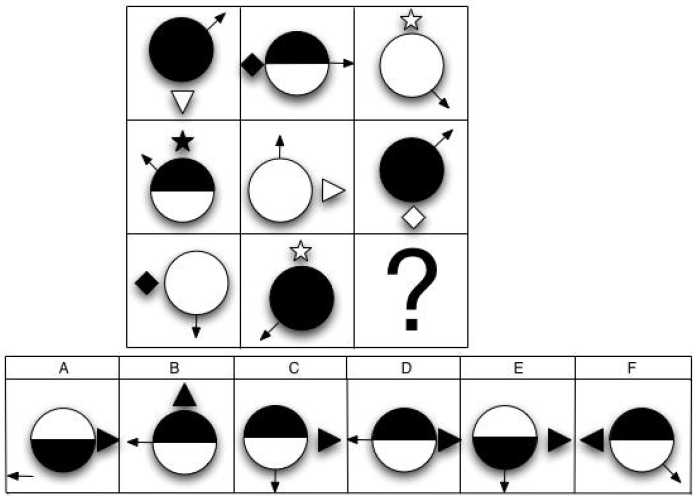
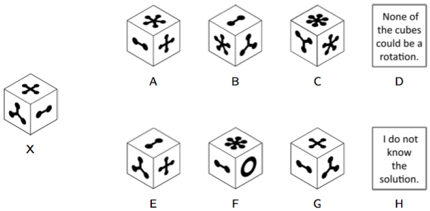
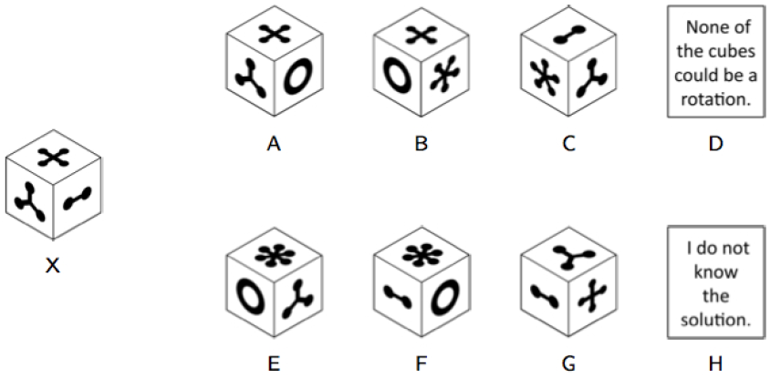
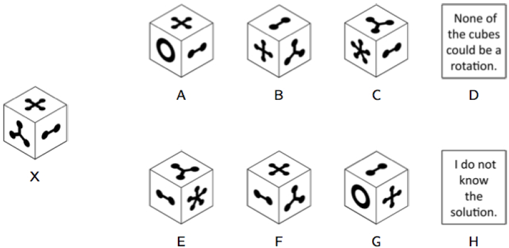

<!DOCTYPE html>
<html>
    <head>
        <title>Research study on decision-making</title>
        <script src="https://unpkg.com/jspsych@7.3.4"></script>
        <script src="https://unpkg.com/@jspsych/plugin-html-keyboard-response@1.1.3"></script>
        <script src="https://unpkg.com/@jspsych/plugin-call-function@1.1.3"></script>

        <script src="https://unpkg.com/@jspsych/plugin-preload@1.1.3"></script>
        <script src="plugins/jspsych-survey-slider.js"></script>
        <script src="plugins/plugin-html-slider-response.js"></script>
        <script src="plugins/plugin-html-button-response.js"></script>
        <script src="plugins/plugin-survey-multi-choice.js"></script>
        <script src="plugins/plugin-survey-likert.js"></script>
        <script src="https://unpkg.com/@jspsych/plugin-instructions@1.1.4"></script>
        <script src="https://unpkg.com/@jspsych/plugin-survey@1.0.1"></script>
        <script src="https://unpkg.com/@jspsych/plugin-survey-text@1.1.3"></script>
        <script src="https://unpkg.com/@jspsych/plugin-survey-multi-select@1.1.3"></script>
        <script src="https://unpkg.com/@jspsych/plugin-call-function@1.1.3"></script>
        <script src="https://unpkg.com/@jspsych/plugin-external-html@1.1.3"></script>
        <script src="https://unpkg.com/inputmask@5.0.3/dist/inputmask.js"></script>
        <script src="https://unpkg.com/surveyjs-widgets@1.8.75/surveyjs-widgets.min.js"></script>
        <script src="https://cdn.jsdelivr.net/npm/markdown-it@14.1.0/dist/markdown-it.min.js"></script>
        <script src="https://www.google.com/recaptcha/api.js" async defer></script>
        <script src="utilities.js"></script>
        <script src="https://cdn.jsdelivr.net/npm/underscore@1.13.1/underscore-umd-min.js"></script>
        <script src='DBs for observers/halo_db.js'></script>
        <script src='DBs for observers/illusory_truth_db.js'></script>
        <script src='DBs for observers/omission_db.js'></script>
        <script src='DBs for observers/recognition_db.js'></script>
        <script src='DBs for observers/reference_price_db.js'></script>
        <script src='DBs for observers/representativeness_db.js'></script>
        <script src='DBs for observers/sunk_cost_db.js'></script>
        <script src='DBs for observers/affect_db.js'></script>
        <script src='DBs for observers/hindsight_db.js'></script>
        <script src='DBs for observers/primacy_db.js'></script>
        <script src='DBs for observers/status_quo_db.js'></script>
        <script src='DBs for observers/anchor_db.js'></script>
        <script src='DBs for observers/availability_db.js'></script>
        <script src='DBs for observers/belief_db.js'></script>
        <script src='DBs for observers/cause_db.js'></script>
        <script src='DBs for observers/decoy_db.js'></script>
        <script src='DBs for observers/mere_exposure_db.js'></script>
        <link href="https://unpkg.com/jspsych@7.3.4/css/jspsych.css" rel="stylesheet" type="text/css" />
        <link rel="stylesheet" href="https://unpkg.com/@jspsych/plugin-survey@1.0.1/css/survey.css">
        <meta http-equiv="Content-Type" content="text/html; charset=UTF-8" />

    </head>
    <script>

        var questionnaire_responses = {}


function create_static_slider_html(value, min, max, step, ticks) {
    if (value === null || typeof value === 'undefined') {
        return '<p>The Prolific user\'s response was not recorded.</p>';
    }

    // This value is from jspsych.css and is used for the offset calculation
    const half_thumb_width = 7.5; 

    let html = `
        <div class="prolific-user-response" style="width: 100%; margin: 20px 0;">
            <p>The Prolific user selected:</p>
            <input 
                type="range" 
                class="jspsych-slider" 
                value="${value}" 
                min="${min}" 
                max="${max}" 
                step="${step}" 
                disabled 
            />
            <div style="position: relative; width: 100%;">`;
    
    // Loop through the ticks to position each one individually using the official plugin's logic
    ticks.forEach((label, index) => {
        // Calculate the width of the "zone" for each label
        const label_width_perc = 100 / (ticks.length - 1);
        
        // Calculate the center of that zone as a percentage
        const percent_of_range = index * (100 / (ticks.length - 1));
        
        // Calculate how far the label is from the center of the slider
        const percent_dist_from_center = (percent_of_range - 50) / 50 * 100;
        
        // Calculate the pixel offset needed to compensate for the slider thumb's width
        const offset = (percent_dist_from_center * half_thumb_width) / 100;
        
        // Add the styled div for each label, using a calc() function for precise positioning
        html += `
            <div style="
                border: 1px solid transparent; 
                display: inline-block; 
                position: absolute; 
                left: calc(${percent_of_range}% - (${label_width_perc}% / 2) - ${offset}px); 
                text-align: center; 
                width: ${label_width_perc}%;
            ">
                <span style="text-align: center; font-size: 80%;">${label}</span>
            </div>`;
    });

    html += `
            </div>
        </div>`;
        
    return html;
}

        var observerTime = null;
        var mistakeCounter = 0;
        var actorNumber = '0';
        var isFlipped = null;
        //#region setup If we put this before we load the src for each of the tasks 
        //then they will load with all the startup variables in them
        var version = "pilot3b";
        var completion_code = 'CCPLBLYX';
        var subjectData = null;
        var observedChoice = null;
        // find the assignmentId & debugging status from the URL
        var urlParams = parseURLParams(window.location.href);
        var subject_id_url = '';
        var debug = false;
        if (typeof urlParams != "undefined") {
            if (urlParams.hasOwnProperty('PROLIFIC_PID')) {
                subject_id_url = urlParams.PROLIFIC_PID[0];
            }

            if (urlParams.hasOwnProperty('debug')) {
                debug = urlParams.debug[0];
            }
        }
        var id = subject_id_url;
        console.log("debug: " + debug);

        //captcha
        var recaptcha = {
        type: jsPsychExternalHtml,
        url: "recaptcha.html",
        cont_btn: "proceed_button",
        force_refresh: true,
        execute_script: true
    };

        /* create timeline */
        var jsPsych = initJsPsych({
            show_progress_bar: false,
            on_interaction_data_update: function (data) {
                if (id != '') {
                    var browser_event = {
                        subject: id,
                        version: version,
                        browser_event: data.event,
                        trial: data.trial,
                        time: data.time
                    }
                    save_data(browser_event, 'browser_events');
                }
            }
        });
        var timeline = [];
        var condition = ["Factor-Included"];

        console.log(condition);

        jsPsych.data.addProperties({
            subject: id,
            version: version,
            condition: condition[0]
        });

        //#endregion

        //#region variables & stimuli

        var images = [
            //simon
            'img/redbox.png', 'img/bluebox.png',
            //numerical distance effect
            'img/12.png', 'img/13.png', 'img/14.png', 'img/21.png', 'img/23.png', 'img/24.png', 'img/26.png', 'img/31.png', 'img/32.png', 'img/34.png', 'img/36.png', 'img/37.png', 'img/41.png', 'img/42.png', 'img/43.png', 'img/46.png', 'img/47.png', 'img/48.png',
            'img/62.png', 'img/63.png', 'img/64.png', 'img/67.png', 'img/68.png', 'img/69.png', 'img/73.png', 'img/74.png', 'img/76.png', 'img/78.png', 'img/79.png', 'img/84.png', 'img/86.png', 'img/87.png', 'img/89.png', 'img/96.png', 'img/97.png', 'img/98.png',
            //double effect
            'img/ned1.png', 'img/ned2.png',
            //causal inference
            'img/oneball.png', 'img/nineballs.png',
        ]

        var introspection_q_slider_width = 750;
        var introspection_q_min = 0;
        var introspection_q_max = 100;
        var introspection_q_require = false;

        var confidence_q_labels = [`Not at all confident`, "", "", "Moderately confident", "", "", `Very confident`];
        var confidence_q_slider_width = 750;
        var confidence_q_min = 0;
        var confidence_q_max = 100;

        var familiarity_prompt = `<p>Before doing this study, had you seen or heard of a task similar to this last one?</p>`;

        var require_movement_general = false;
        var required_general = debug ? false : true;

        var trivia_question_already = false;
        var only_main_question = false;
        var time_needed = "3";

        //#endregion

        //observer variables

        //#region preload
        var preload = {
            type: jsPsychPreload,
            images: images
        }
        //#endregion
    </script>

    <script src="tasks observer/representativeness.js"></script>
    <script src="tasks observer/reference_price.js"></script>
    <script src="tasks observer/halo.js"></script>
    <script src="tasks observer/illusion_of_truth_pt2.js"></script>
    <script src="tasks observer/omission.js"></script>
    <script src="tasks observer/recognition.js"></script>
    <script src="tasks observer/affect.js"></script>
    <script src="tasks observer/hindsight2.js"></script> 
    <script src="tasks observer/primacy_order.js"></script>
    <script src="tasks observer/illusion_of_truth_pt1.js"></script>
    <script src="tasks observer/sunk_cost2.js"></script>
    <script src="tasks observer/status_quo.js"></script> 
    <script src="tasks observer/anchor.js"></script>
    <script src="tasks observer/avail.js"></script>
    <script src="tasks observer/decoy.js"></script>
    <script src="tasks observer/cause.js"></script>
    <script src="tasks observer/belief.js"></script>
    <script src="tasks observer/mere_exposure.js"></script>


<body>
    <script>

// funtion to get participant counter
/* function getCounter(url, datDir) {
	let numCounter = 0;
	$.ajax({
			url: url,
			type: 'POST',
			async: false,
			data: { dir: datDir },
	}).done(function (data) {
			numCounter = data;
	});
	return numCounter;
}

function write_array_to_csv(filename, arr) {
	$.ajax({
			url: "write_array_to_csv.php",
			type: 'POST',
			async: false,
			data: {arr: arr.toString(), filename: filename},
			success: function(response) {
				console.log(response);
			}
	});
}

x = getCounter("counter.php");
y = parseInt(x)

// deal with y > # past subjects (b/c of dropout in observer study)
// overall plan:
// start back at y - # past subjects
// find lowest number above that that's not completed & not being redone; assign y = that (but don't update counter.txt)
// if there are none, randomly sample from being_redone
// if there are none in being_redone, randomly sample from 1 to num_targets

var past_end = false;
var target_num = y;

// this is "while" instead of "if" in case counter went over num_target_subjects*2
while (target_num >= num_target_subjects) {
	target_num = target_num - num_target_subjects; // restart at 0
	past_end = true;
}

// get past subjects that have already been completed
var completed = null;
var being_redone = null;

// if we're not past end, just keep as is
if (past_end) {
	var is_being_redone = true;

	// if we are past end, we need to get completed & being_redone synchronously
	$.ajax({
			type: "GET",
			url: "http://opal12.opalstack.com/home/am9578/apps/php/experiments/menagerie/v5/completed.csv",
			dataType: "text",
			async: false,
			success: function(d) {
				if (d.length > 0) {
					completed = Papa.parse(d, {dynamicTyping: true}).data[0];
				} else {
					completed = [];
				}
			},
			error: function(xhr, ajaxOptions, thrownError) {
					alert("Status: " + xhr.status + "     Error: " + thrownError);
			}
	});

	$.ajax({
			type: "GET",
			url: "http://opal12.opalstack.com/home/am9578/apps/php/experiments/menagerie/v5/being_redone.csv",
			dataType: "text",
			async: false,
			success: function(d) {
				if (d.length > 0) {
					being_redone = Papa.parse(d, {dynamicTyping: true}).data[0];
				} else {
					being_redone = [];
				}
			},
			error: function(xhr, ajaxOptions, thrownError) {
					alert("Status: " + xhr.status + "     Error: " + thrownError);
			}
	});

	// assign y to the lowest value not in completed or being_redone.
	while (completed.includes(target_num) || being_redone.includes(target_num)) {
		if (target_num < (num_target_subjects - 1)) {
			target_num++;
		}
		else {
			// this means that there's no targets that are neither completed nor being_redone
			// in which case, check if there are any being redone...
			if (being_redone.length > 0) {
				// choose randomly from among them
				target_num = being_redone[Math.floor(Math.random() * being_redone.length)];
			} else {
				// otherwise, just choose randomly
				target_num = getRandomInt(0, num_target_subjects-1);
				is_being_redone = false; // if we're in this branch, it means that everything was completed, nothing is being redone, and we're just redoing one of the completed ones (cause why not).
			}

			break;
		}
	}

	if (is_being_redone) {
		being_redone.push(target_num);
		write_array_to_csv('being_redone.csv', being_redone);
	}
}

console.log(y)
console.log(target_num)  */

        //#region INTRODUCTION
        var check_consent = function (elem) {
    var consentYes = document.querySelector('input[name="consent_checkbox"][value="yes"]');
    if (consentYes && consentYes.checked) {
        return true;
    } else {
        alert("In order to participate, you must select 'Yes'. Otherwise, please exit the study.");
        return false;
    }
};


        var consent_block = {
            type: jsPsychExternalHtml,
            url: "Princeton-consent-form.html",
            cont_btn: "start",
            check_fn: check_consent,
            force_refresh: true
        };

        // introduction
        var welcome = {
            type: jsPsychInstructions,
            pages: [
                `<p><b>Welcome to the experiment.</b></p> <p>Click next to begin.</p>`,
                `<p>You must be 18 years or older to complete this study. If you under 18, please exit now.`,
                `<p>This study will take around ${time_needed} minutes to complete. You must complete the experiment in one sitting.
                <b>So, before you start, please make sure that you have ${time_needed} minutes to devote entirely
                to this study.</b> We appreciate your participation.</p>`,
                `<p>On the next page, you'll find a consent form. Please read it and select "Yes" if you wish to participate in the study.`,
            ],
            show_clickable_nav: true,
            on_finish: function () {
                start_time = Date.now();
            }
        }

        var start_time = null;
        /*var agreement = {
            type: jsPsychHtmlButtonResponse,
            stimulus: `
            <p>The nature and purpose of this research have been sufficiently explained and I agree to participate in this study. I understand
            that I am free to withdraw at any time without incurring any penalty.</p>
            <p><i> Please consent by clicking the button below to continue. Otherwise, please exit the study at this time. </i></p>`,
            choices: ["I agree"],
        };*/

        var MTurk_id = {
            type: jsPsychSurveyText,
            questions: [{ prompt: "Your response", name: "worker_id" }],
            preamble: [`Please enter your Prolific ID below.<br>(When you're done, press 'Submit Answer'; don't hit Enter.)`],
            button_label: "Submit Answer"
        };

        /*var id = getRandomInt(1, 9999999);
        jsPsych.data.addProperties({
            subject: id,
            version: version,
            condition: condition[0]
        });*/
        var MTurk_id_loop = {
            timeline: [MTurk_id],
            loop_function: function (data) {
                id = data.last(1).values()[0].response.worker_id;
                if (id) {
                    jsPsych.data.addProperties({
                        subject: id,
                        version: version,
                        condition: condition[0]
                    });
                    start_time = Date.now();
                    return false;
                } else {
                    alert("You must enter your ID to continue.");
                    return true;
                }
            }
        };

        //attention checks

        var attnCheck1 = {
            type: jsPsychSurveyText,
            questions: [{ prompt: "Your response" }],
            preamble: [`If you are certain you would like to participate, please type this <i>exact</i>
            sentence into the box below: "I will complete this study with my full attention"
            and then continue.`]
        };

        var attnCheck1_loop = {
            timeline: [attnCheck1],
            loop_function: function (data) {
                var attnResponse1 = data.last(1).values()[0].response.Q0
                if (attnResponse1 == "I will complete this study with my full attention" || attnResponse1 == '"I will complete this study with my full attention"') {
                    return false;
                } else {
                    alert("Please read the instructions and try again");
                    return true;
                }
            }
        };

        var attnCheck2 = {
            type: jsPsychSurveyText,
            questions: [{ prompt: "Your response", required: false }],
            preamble: [`
            <p>Please read the bolded statement below and then type it in the box in reverse order. Please include any capitalizations in the words that have capital letters. Do not include any punctuation (e.g., periods, quotation marks, etc.).</p>
            <p>For example, if the statement said "fun are trucks Red," you would type the following phrase: Red trucks are fun</p>
            <p><b>cheese green of made is moon The<b></p>
            `],
            button_label: "Submit Answer",
            on_finish: function (data) {
                s1_data = {
                    subject: data.subject,
                    version: data.version,
                    task_name: "attention check 2",
                    choice: data.response.Q0,
                    auxiliary_info1: data.response.Q0.replace(/\s+/g, '').toLowerCase() == "themoonismadeofgreencheese" ? "Success" : "Failure",
                    rt: data.rt
                }
                save_data(s1_data, 'introspection');
            }
        };
        //timeline.push(attnCheck2)

        var movie = ''
        var attnCheck3 = {
            type: jsPsychSurveyText,
            questions: [
                { prompt: "My Blue Heaven", correct_response: "3", required: false },
                { prompt: "Up", correct_response: "5", required: false },
                { prompt: "Along Came Polly", correct_response: "1", required: false },
                { prompt: "The Tale of Desperaux", correct_response: "4", required: false },
                { prompt: "Jaws", correct_response: "2", required: false },
            ],
            preamble: `<p>Please order the following movie titles alphabetically (by the first letter of the movie titles) by numbering them from 1 to 5. 1 should be the movie title that appears earliest in the alphabet, while 5 should be the movie title that appears the latest in the alphabet.</p>
            <p>Please only type in one number for each movie title. Do not include any punctuation, letters, symbols, or any numbers except for 1, 2 ,3, 4, and 5.</p>`,
            button_label: "Submit Answer",
            on_finish: function (data) {
                movie = data.response.Q0 + "," + data.response.Q1 + "," + data.response.Q2 + "," + data.response.Q3 + "," + data.response.Q4,
                    s1_data = {
                        subject: data.subject,
                        version: data.version,
                        task_name: "attention check 3",
                        choice: movie,
                        auxiliary_info1: movie == "3,5,1,4,2" ? "Correct" : "Incorrect",
                        rt: data.rt
                    }
                save_data(s1_data, 'introspection');
            }
        };
        //timeline.push(attnCheck3)

        //start page
        var begin = {
            type: jsPsychInstructions,
            pages: [
                `<p>Thank you for beginning the study! In a prior study, we asked other real Prolific users to make a series of short judgment/decision-making tasks.</p>
                <p>In this study, we've paired you with one of those prior Prolific users. We're going to show you each judgment/decision-making task that the user completed, along with the actual judgment or decision they made. Then, we'll ask you a series of questions about the Prolific user's judgment/decision-making process. Please do your best to answer the questions as accurately as possible.</p>
                <p>To give you a better sense of what the Prolific user experienced, for each task, we will ask you to spend the same amount of time on that page that the Prolific user spent. The "Continue" button will appear when you are allowed to advance. So if the Prolific user spent 10 seconds on the page, then the "Continue button" will appear after 10 seconds.</p>
                <p>In total, the study will take around ${time_needed} minutes to complete.</p>
                <p>Please click the button below to continue!</p>
            `],
            show_clickable_nav: true
        };


        var gen_choices = ['Man', 'Woman','Some other way', 'Prefer not to say'];
        var gen = {
            type: jsPsychSurveyMultiChoice,
            preamble: "Finally, we'll ask you to input some demographic information.",
            questions: [{prompt: "<b>Gender:</b> Do you describe yourself as a man, a woman, or in some other way?", options: gen_choices,
                required: false}],
            on_finish: function(data){
                jsPsych.data.addProperties({gender: data.response.Q0});
            }
        };

        var age_years = {
                type: jsPsychSurveyText,
                questions: [
                    {prompt: "Age:", required: false}
                ],
            on_finish: function(data){
                jsPsych.data.addProperties({age: data.response.age});
            }
        };

        var race_options = ['White', 'Hispanic, Latinx, or Spanish origin', 'Black or African American', 'Asian', 'American Indian or Alaska Native', 'Middle Eastern or North African', 'Native Hawaiian or Other Pacific Islander', 'Some other race, ethnicity, or origin', 'Prefer not to say'];
        var race = {
            type: jsPsychSurveyMultiSelect,
            questions: [{prompt: '<b>Race/ethnicity</b>: Which categories below describe you? Please select all that apply.', options: race_options,
                required: false}],
            on_finish: function(data){
                jsPsych.data.addProperties({race: JSON.stringify(data.response.Q0)});
            }
        };


        var nativeEng_options = ['Yes', 'No', 'Prefer not to say'];
        var nativeEng = {
            type: jsPsychHtmlButtonResponse,
            stimulus: 'Is English your first language?<br>',
            choices: nativeEng_options,
            on_finish: function(data){
                jsPsych.data.addProperties({nativeEng: nativeEng_options[data.response]});
            }
        };

        var edu_options = ["Some high school","High school", "Some college", "2 year degree", "4 year degree", "Postgraduate/Professional degree/other", "Prefer not to say"];
        var edu = {
            type: jsPsychHtmlButtonResponse,
            stimulus: 'What is the highest level of education that you have completed?<br>',
            choices: edu_options,
            on_finish: function(data){
                jsPsych.data.addProperties({edu: edu_options[data.response]});
            }
        };

        var income_options = ['Under $5,000', '$5,000 - $10,000', '$10,000 - $15,000', '$15,000 - $25,000', '$25,000 - $35,000', '$35,000 - $50,000', '$50,000 - $65,000', '$65,000 - $80,000', '$80,000 - $100,000', 'Over $100,000', 'Prefer not to say'];
        var income = {
            type: jsPsychHtmlButtonResponse,
            stimulus: 'What was the total amount of income you earned during the last year?<br>',
            choices: income_options,
            on_finish: function(data){
                jsPsych.data.addProperties({income: income_options[data.response]});
            }
        };

        var permission = {
            type: jsPsychSurveyMultiSelect,
            preamble: ["Earlier in the task, we asked you several questions about how you think the Prolific user made their choices between movies in Section 1 of this study.<br><br>\
            At some point in the future, we may want to anonymously quote some of your responses to these questions in other studies, or in scientific publications resulting from this research. \
            Do you wish to give us permission to quote your answers? The quoted content would be <b>completely anonymous</b> and would not contain any information that could be linked back to you in any way. If you do not wish to have your answers to these questions quoted, you can select 'No' and there will not be any negative consequences."],
            questions: [{prompt: '', options: ['Yes, I am okay with my answers to these questions being quoted anonymously.', 'No, please do not quote my answers to these questions.'],
                required: false, horizontal: false, use_default: true}],
            on_finish: function(data){
                jsPsych.data.addProperties({permission: data.response.Q0});
            }
        };

        var demographics_timeline = [gen, age_years, race, nativeEng, edu, income, permission];

        //#endregion

        //#region TASKS

        

var current_task_index= 0;
var next_task = {
    type: jsPsychHtmlButtonResponse,
    stimulus: function() {
        var total_tasks = task_list_shuffled_no_in_between.length;
        var next_task_index = current_task_index + 1;
        
        if (next_task_index >= total_tasks) {
            return `<p>Thank you for completing all of the exercises!</p>
                    <p>You have now finished the first phase of the study, and will now begin the <b>second phase</b> of the study.</p>
                    <p>In this phase, you will be asked to answer a few questions. These should take around 2 minutes in total to complete. Please try to answer each questionnaire as honestly as possible.</p>
                    <p><i>Click the button below to begin the second phase.</i></p>`;
        } else {
            return `<p>This exercise is now complete. Great job!</p>
                    <p>You will now move onto exercise <b>${next_task_index+1} out of ${total_tasks}</b>.</p>
                    <p><i>Please click the button below to begin the next exercise.</i></p>`;
        }
    },
    choices: function() {
        var total_tasks = task_list_shuffled_no_in_between.length;
        
        if (current_task_index >= total_tasks) {
            return ["Begin"];
        } else {
            return ['Next Exercise'];
        }
    },
    on_finish: function() {
        var total_tasks = task_list_shuffled_no_in_between.length;
        if (current_task_index < total_tasks) {
            current_task_index += 1;
        }
    }
};


        //#region Make task list
        /*var task_list = [status_quo, representativeness, hindsight, 
                        reference_price, anchor, avail, cause, contact, 
                        double, decoy, belief, assoc, mere_exposure,halo,
                        omission, sunk_cost, imaginability]; */
        //without hindsight
        /*var task_list = [anchor, avail, belief, cause, decoy, halo, 
                        mere_exposure, reference_price, representativeness, 
                        status_quo, omission, imaginability, sunk_cost, 
                        recognition]; */
        //with hindsight
        /*var task_list = [anchor, avail, belief, cause, decoy, halo, hindsight,
                        mere_exposure, reference_price, representativeness, 
                        status_quo, omission, imaginability, sunk_cost, 
                        recognition]; */

        //November 2024 pilot
        //var task_list = [halo, hindsight, imaginability, omission, 
        //                recognition, reference_price, representativeness,
         //               status_quo, sunk_cost];

        //November 2024 pilot without hindsight, illusory truth, imaginability
        /*var task_list = [halo, omission, 
                        recognition, reference_price, representativeness,
                        status_quo, sunk_cost];*/

        //November 2024 pilot with hindsight2
        /*var task_list = [halo, hindsight2, omission, 
                        recognition, reference_price, representativeness,
                        status_quo, sunk_cost];*/

        //December 2024 pilot
        //var task_list = [hindsight2, simulation, affect, sunk_cost2, status_quo, primacy_order]

        var task_list = [affect, anchor, avail, belief, cause, decoy, halo, hindsight2, mere_exposure, omission, recognition, primacy_order, reference_price, representativeness, sunk_cost2, status_quo]

        console.log("task_list: ", task_list);

        var task_list_shuffled_no_in_between = _.shuffle(task_list);
        //task_list_shuffled_no_in_between.unshift(illusion_of_truth_pt1);
        //task_list_shuffled_no_in_between.push(illusion_of_truth_pt2);

        var task_list_shuffled = [];
        for (let i = 0; i < task_list_shuffled_no_in_between.length; i++) {
            task_list_shuffled.push(task_list_shuffled_no_in_between[i]);
            task_list_shuffled.push(next_task); //add in between screen between each task
        }

        // Insert attnCheck2 at the 7th position (adjusting for "next tasks")
        //task_list_shuffled.splice(14, 0, attnCheck2);
        task_list_shuffled.splice(6,0,attnCheck2);

        // Insert attnCheck3 at the 14th position (adjusting for the earlier insertion)
        //task_list_shuffled.splice(26, 0, attnCheck3);
        task_list_shuffled.splice(12,0,attnCheck3);

        //insert captcha at the 16th position
        //task_list_shuffled.splice(14, 0, recaptcha);

        console.log(typeof task_list_shuffled);

        var tasks = {
            timeline: task_list_shuffled.concat(demographics_timeline)

        };


        console.log("task_list_shuffled: ", task_list_shuffled);


        //#endregion

        //#region MEASURES
        

        var phq1_responses = null;
        var phq9_one = {
            type: jsPsychSurveyMultiChoice,
            preamble: `<p>Over the <i>last 2 weeks</i>, how often have you been bothered by any of the following problems?</p>
        <p><i>0 = Not at all;  1 = Several days;  2 = More than half the days;  3 = Nearly everyday</i></p>`,
            questions: [
                {
                    prompt: "Little interest or pleasure in doing things",
                    options: [0, 1, 2, 3],
                    required: false,
                    horizontal: true,
                },
                {
                    prompt: "Feeling down, depressed, or hopeless",
                    options: [0, 1, 2, 3],
                    required: false,
                    horizontal: true,
                },
                {
                    prompt: "Trouble falling or staying asleep, or sleeping too much",
                    options: [0, 1, 2, 3],
                    required: false,
                    horizontal: true,
                },
                {
                    prompt: "Feeling tired or having little energy",
                    options: [0, 1, 2, 3],
                    required: false,
                    horizontal: true,
                },
                {
                    prompt: "Poor appetite or overeating",
                    options: [0, 1, 2, 3],
                    required: false,
                    horizontal: true,
                },
                {
                    prompt: `Feeling bad about yourself &#8212 or that you are a failure or have let yourself or your family down`,
                    options: [0, 1, 2, 3],
                    required: false,
                    horizontal: true,
                },
                {
                    prompt: "Trouble concentrating on things, such as reading the newspaper or watching television",
                    options: [0, 1, 2, 3],
                    required: false,
                    horizontal: true,
                },
                {
                    prompt: `Moving or speaking so slowly that other people could have noticed? <p>Or the opposite &#8212 being so fidgety or restless that you have been moving around a lot more than usual`,
                    options: [0, 1, 2, 3],
                    required: false,
                    horizontal: true,
                },
            ],
            randomize_order: true,
            on_finish: function (data) {
                var response = Object.values(data.response);
                phq91_responses = new Array(response.length);
                for (var i = 0; i < response.length; i++) {
                    phq91_responses[i] = response[i];
                }
                phq91_responses = phq91_responses.join();
            }
        }

        var phq9_two_options = ["Not difficult at all", "Somewhat difficult", "Very difficult", "Extremely difficult"]

        var phq2_responses = null;
        var phq9_two = {
            type: jsPsychSurveyMultiChoice,
            questions: [
                {
                    prompt: "If you checked off <i>any</i> problems, how <i>difficult</i> have these problems made it for you to do your work, take care of things at home, or get along with other people?",
                    options: phq9_two_options,
                    required: false,
                    horizontal: true
                },
            ],
            on_finish: function (data) {
                var response = Object.values(data.response);
                phq92_responses = new Array(response.length);
                for (var i = 0; i < response.length; i++) {
                    phq92_responses[i] = phq9_two_options.indexOf(response[i]);
                }
                phq92_responses = phq92_responses.join();
            }
        }

        var phq9 = {
            timeline: [phq9_one, phq9_two]
        }

        var gad71_responses = null;
        var gad7_one = {
            type: jsPsychSurveyMultiChoice,
            preamble: `
        <p>Over the <i>last two weeks</i>, how often have you been bothered by the following problems?</p>
        <p><i>0 = Not at all; 1 = Several days; 2 = More than half the days;  3 = Nearly every day</i></p>`,
            questions: [
                {
                    prompt: "Feeling nervous, anxious, or on edge",
                    options: [0, 1, 2, 3],
                    required: false,
                    horizontal: true
                },
                {
                    prompt: "Not being able to stop or control worrying",
                    options: [0, 1, 2, 3],
                    required: false,
                    horizontal: true
                },
                {
                    prompt: "Worrying too much about different things",
                    options: [0, 1, 2, 3],
                    required: false,
                    horizontal: true
                },
                {
                    prompt: "Trouble relaxing",
                    options: [0, 1, 2, 3],
                    required: false,
                    horizontal: true
                },
                {
                    prompt: "Being so restless that it is hard to sit still",
                    options: [0, 1, 2, 3],
                    required: false,
                    horizontal: true
                },
                {
                    prompt: "Becoming easily annoyed or irritable",
                    options: [0, 1, 2, 3],
                    required: false,
                    horizontal: true
                },
                {
                    prompt: "Feeling afraid, as if something awful might happen",
                    options: [0, 1, 2, 3],
                    required: false,
                    horizontal: true
                },
            ],
            randomize_order: true,
            on_finish: function (data) {
                var response = Object.values(data.response);
                gad71_responses = new Array(response.length);
                for (var i = 0; i < response.length; i++) {
                    gad71_responses[i] = response[i];
                }
                gad71_responses = gad71_responses.join();
            }
        }

        var gad7_two_options = ["Not difficult at all", "Somewhat difficult", "Very difficult", "Extremely difficult"]
        var gad72_responses = null;
        var gad7_two = {
            type: jsPsychSurveyMultiChoice,
            questions: [
                {
                    prompt: "If you checked off <i>any</i> problems on the previous screen, how <i>difficult</i> have these problems made it for you to do your work, take care of things at home, or get along with other people?",
                    options: gad7_two_options,
                    required: required_general,
                    horizontal: true
                },
            ],
            on_finish: function (data) {
                var response = Object.values(data.response);
                gad72_responses = new Array(response.length);
                for (var i = 0; i < response.length; i++) {
                    gad72_responses[i] = gad7_two_options.indexOf(response[i]);
                }
                gad72_responses = gad72_responses.join();
            }
        }

        var gad7 = {
            timeline: [gad7_one, gad7_two]
        }

        var audit_responses = null;
        var audit = {
            type: jsPsychSurveyMultiChoice,
            preamble: `
        <p>Please choose the answer that is correct for you.</p>`,
            questions: [
                {
                    prompt: "How often do you have a drink containing alcohol?",
                    options: ["Never", "Monthly or less", "Two to four times a month", "Two to three times a week", "Four or more times a week"],
                    required: false,
                },
                {
                    prompt: "How many drinks containing alcohol do you have on a typical day when you are drinking?",
                    options: ["0 (Not Applicable)", "1 or 2", "3 or 4", "5 or 6", "7 to 9", "10 or more"],
                    required: false,
                },
                {
                    prompt: "How often do you have six or more drinks on one occasion?",
                    options: ["Never", "Less than monthly", "Monthly", "Weekly", "Daily or almost daily"],
                    required: false,
                },
                {
                    prompt: "How often during the last year have you found that you were not able to stop drinking once you had started?",
                    options: ["Never", "Less than monthly", "Monthly", "Weekly", "Daily or almost daily"],
                    required: false,
                },
                {
                    prompt: "How often during the last year have you failed to do what was normally expected from you because of drinking?",
                    options: ["Never", "Less than monthly", "Monthly", "Weekly", "Daily or almost daily"],
                    required: false,
                },
                {
                    prompt: "How often during the last year have you needed a first drink in the morning to get yourself going after a heavy drinking session?",
                    options: ["Never", "Less than monthly", "Monthly", "Weekly", "Daily or almost daily"],
                    required: false,
                },
                {
                    prompt: "How often during the last year have you had a feeling of guilt or remorse after drinking?",
                    options: ["Never", "Less than monthly", "Monthly", "Weekly", "Daily or almost daily"],
                    required: false,
                },
                {
                    prompt: "How often during the last year have you been unable to remember what happened the night before because you had been drinking?",
                    options: ["Never", "Less than monthly", "Monthly", "Weekly", "Daily or almost daily"],
                    required: false,
                },
                {
                    prompt: "Have you or someone else been injured as a result of your drinking?",
                    options: ["No", "Yes, but not in the last year", "Yes, during the last year"],
                    required: false,
                },
                {
                    prompt: "Has a relative or friend, or a doctor or other health worker been concerned about your drinking or suggested you cut down?",
                    options: ["No", "Yes, but not in the last year", "Yes, during the last year"],
                    required: false,
                },
            ],
            randomize_order: true,
            on_finish: function (data) {
                var response = Object.values(data.response);
                audit_responses = new Array(response.length);
                for (var i = 0; i < response.length; i++) {
                    audit_responses[i] = response[i];
                }
                audit_responses = audit_responses.join();
            }
        }

        var ocir_options = ["Not at all", "A little", "Moderately", "Extremely"]
        var ocir_responses = null;
        var ocir = {
            type: jsPsychSurveyMultiChoice,
            preamble: `
        <p>The following statements refer to experiences that many people have in their everyday lives.<p>Select the option that best describes <b>HOW MUCH</b> that experience has <b>DISTRESSED or BOTHERED</b> you during the <b>the PAST MONTH.</b>`,
            questions: [
                {
                    prompt: "I have saved up so many things that they get in the way.",
                    options: ocir_options,
                    required: false,
                    horizontal: true
                },
                {
                    prompt: "I check things more often than necessary.",
                    options: ocir_options,
                    required: false,
                    horizontal: true
                },
                {
                    prompt: "I get upset if objects are not arranged properly.",
                    options: ocir_options,
                    required: false,
                    horizontal: true
                },
                {
                    prompt: "I feel compelled to count while I am doing things.",
                    options: ocir_options,
                    required: false,
                    horizontal: true
                },
                {
                    prompt: "I find it difficult to touch an object when I know it has been touched by strangers or certain people.",
                    options: ocir_options,
                    required: false,
                    horizontal: true
                },
                {
                    prompt: "I find it difficult to control my own thoughts.",
                    options: ocir_options,
                    required: false,
                    horizontal: true
                },
                {
                    prompt: "I collect things I don't need.",
                    options: ocir_options,
                    required: false,
                    horizontal: true
                },
                {
                    prompt: "I repeatedly check doors, windows, drawers, etc.",
                    options: ocir_options,
                    required: false,
                    horizontal: true
                },
                {
                    prompt: "I get upset if others change the way I have arranged things.",
                    options: ocir_options,
                    required: false,
                    horizontal: true
                },
                {
                    prompt: "I feel I have to repeat certain numbers.",
                    options: ocir_options,
                    required: false,
                    horizontal: true
                },
                {
                    prompt: "I sometimes have to wash  or clean myself simply because I feel contaminated.",
                    options: ocir_options,
                    required: false,
                    horizontal: true
                },
                {
                    prompt: "I am upset by unpleasant thoughts that come into my mind against my will.",
                    options: ocir_options,
                    required: false,
                    horizontal: true
                },
                {
                    prompt: "I avoid throwing things away because I am afraid I might need them later.",
                    options: ocir_options,
                    required: false,
                    horizontal: true
                },
                {
                    prompt: "I repeatedly check gas and water taps and light switches after turning them off.",
                    options: ocir_options,
                    required: false,
                    horizontal: true
                },
                {
                    prompt: "I need things to be arranged in a particular order.",
                    options: ocir_options,
                    required: false,
                    horizontal: true
                },
                {
                    prompt: "I feel that there are good and bad numbers.",
                    options: ocir_options,
                    required: false,
                    horizontal: true
                },
                {
                    prompt: "I wash my hands more often and longer than necessary.",
                    options: ocir_options,
                    required: false,
                    horizontal: true
                },
                {
                    prompt: "I frequently get nasty thoughts and have difficulty in getting rid of them.",
                    options: ocir_options,
                    required: false,
                    horizontal: true
                },
            ],
            randomize_order: true,
            on_finish: function (data) {
                var response = Object.values(data.response);
                ocir_responses = new Array(response.length);
                for (var i = 0; i < response.length; i++) {
                    ocir_responses[i] = ocir_options.indexOf(response[i]);
                }
                ocir_responses = ocir_responses.join();
            }
        }

        var spq_responses = null;
        var spq_options = ["Strongly disagree", "Disagree", "Neutral", "Agree", "Strongly agree"]
        var spq = {
            type: jsPsychSurveyMultiChoice,
            preamble: "Please answer the following questions.",
            questions: [
                {
                    prompt: "Do you sometimes feel that people are talking about you?",
                    options: spq_options,
                    required: false,
                },
                {
                    prompt: "Do you sometimes feel that other people are watching you?",
                    options: spq_options,
                    required: false,
                },
                {
                    prompt: "When shopping, do you get the feeling that other people are taking notice of you?",
                    options: spq_options,
                    required: false,
                },
                {
                    prompt: "I often feel that others have it in for me.",
                    options: spq_options,
                    required: false,
                },
                {
                    prompt: "Do you sometimes get concerned that friends or co-workers are not really loyal or trustworthy?",
                    options: spq_options,
                    required: false,
                },
                {
                    prompt: "Do you often have to keep an eye out to stop people from taking advantage of you?",
                    options: spq_options,
                    required: false,
                },
                {
                    prompt: `Do you feel that you cannot get "close" to people?`,
                    options: spq_options,
                    required: false,
                },
                {
                    prompt: `I find it hard to be emotionally close to other people.`,
                    options: spq_options,
                    required: false,
                },
                {
                    prompt: `Do you feel that there is no one you are really close to outside of your immediate family, or people you can confide in or talk to about personal problems?`,
                    options: spq_options,
                    required: false,
                },
                {
                    prompt: `I tend to keep my feelings to myself.`,
                    options: spq_options,
                    required: false,
                },
                {
                    prompt: `I rarely laugh and smile.`,
                    options: spq_options,
                    required: false,
                },
                {
                    prompt: `I am not good at expressing my true feelings by the way I talk and look.`,
                    options: spq_options,
                    required: false,
                },
                {
                    prompt: `Other people see me as slightly eccentric (odd).`,
                    options: spq_options,
                    required: false,
                },
                {
                    prompt: `I am an odd, unusual person.`,
                    options: spq_options,
                    required: false,
                },
                {
                    prompt: `I have some eccentric (odd) habits.`,
                    options: spq_options,
                    required: false,
                },
                {
                    prompt: `People sometimes comment on my unusual mannerisms and habits.`,
                    options: spq_options,
                    required: false,
                },
                {
                    prompt: `Do you often feel nervous when you are in a group of unfamiliar people?`,
                    options: spq_options,
                    required: false,
                },
                {
                    prompt: `I get anxious when meeting people for the first time.`,
                    options: spq_options,
                    required: false,
                },
                {
                    prompt: `I feel very uncomfortable in social situations involving unfamiliar people.`,
                    options: spq_options,
                    required: false,
                },
                {
                    prompt: `I sometimes avoid going to places where there will be many people because I will get anxious.`,
                    options: spq_options,
                    required: false,
                },
                {
                    prompt: `Do you believe in telepathy (mind-reading)?`,
                    options: spq_options,
                    required: false,
                },
                {
                    prompt: `Do you believe in clairvoyance (psychic forces, fortune telling)?`,
                    options: spq_options,
                    required: false,
                },
                {
                    prompt: `Have you had experiences with astrology, seeing the future, UFO's, ESP, or a sixth sense?`,
                    options: spq_options,
                    required: false,
                },
                {
                    prompt: `Have you ever felt that you are communicating with another person telepathically (by mind-reading)?`,
                    options: spq_options,
                    required: false,
                },
                {
                    prompt: `I sometimes jump quickly from one topic to another when speaking.`,
                    options: spq_options,
                    required: false,
                },
                {
                    prompt: `Do you tend to wander off the topic when having a conversation?`,
                    options: spq_options,
                    required: false,
                },
                {
                    prompt: `I often ramble on too much when speaking.`,
                    options: spq_options,
                    required: false,
                },
                {
                    prompt: `I sometimes forget what I am trying to say.`,
                    options: spq_options,
                    required: false,
                },
                {
                    prompt: `I often hear a voice speaking my thoughts aloud.`,
                    options: spq_options,
                    required: false,
                },
                {
                    prompt: `When you look at a person or yourself in a mirror, have you ever seen the face change right before your eyes?`,
                    options: spq_options,
                    required: false,
                },
                {
                    prompt: `Are your thoughts sometimes so strong that you can almost hear them?`,
                    options: spq_options,
                    required: false,
                },
                {
                    prompt: `Do everyday things seem unusually large or small?`,
                    options: spq_options,
                    required: false,
                },
            ],
            randomize_order: true,
            on_finish: function (data) {
                var response = Object.values(data.response);
                spq_responses = new Array(response.length);
                for (var i = 0; i < response.length; i++) {
                    spq_responses[i] = spq_options.indexOf(response[i]);
                }
                spq_responses = spq_responses.join();
            }
        }

        var tas_options = ["Strongly disagree", "Disagree", "Neutral", "Agree", "Strongly agree"];
        var tas_responses = null;
        var tas = {
            type: jsPsychSurveyMultiChoice,
            preamble: "<br><b>How much do you agree or disagree with the following statements?</b>",
            randomize_question_order: true,
            button_label: 'Submit',
            questions: [
                { prompt: "<hr>I am often confused about what emotion I am feeling.", options: tas_options, required: false },
                { prompt: "<hr>It is difficult for me to find the right words for my feelings.", options: tas_options, required: false },
                { prompt: "<hr>I have physical sensations that even doctors don't understand.", options: tas_options, required: false },
                { prompt: "<hr>I am able to describe my feelings easily.", options: tas_options, required: false },
                { prompt: "<hr>I prefer to analyze problems rather than just describe them.", options: tas_options, required: false },
                { prompt: "<hr>When I am upset, I don't know if I am sad, frightened, or angry.", options: tas_options, required: false },
                { prompt: "<hr>I am often puzzled by sensations in my body.", options: tas_options, required: false },
                { prompt: "<hr>I prefer to just let things happen rather than to understand why they turned out that way.", options: tas_options, required: false },
                { prompt: "<hr>I have feelings that I can't quite identify.", options: tas_options, required: false },
                { prompt: "<hr>Being in touch with emotions is essential.", options: tas_options, required: false },
                { prompt: "<hr>I find it hard to describe how I feel about people.", options: tas_options, required: false },
                { prompt: "<hr>People tell me to describe my feelings more.", options: tas_options, required: false },
                { prompt: "<hr>I don't know what's going on inside me.", options: tas_options, required: false },
                { prompt: "<hr>I often don't know why I am angry.", options: tas_options, required: false },
                { prompt: "<hr>I prefer talking to people about their daily activities rather than their feelings.", options: tas_options, required: false },
                { prompt: "<hr>I prefer to watch 'light' entertainment shows rather than psychological dramas.", options: tas_options, required: false },
                { prompt: "<hr>It is difficult for me to reveal my innermost feelings, even to close friends.", options: tas_options, required: false },
                { prompt: "<hr>I can feel close to someone, even in moments of silence.", options: tas_options, required: false },
                { prompt: "<hr>I find examination of my feelings useful in solving personal problems.", options: tas_options, required: false },
                { prompt: "<hr>Looking for hidden meanings in movies or plays distracts from their enjoyment.", options: tas_options, required: false }
            ],
            on_finish: function (data) {
                var response = Object.values(data.response);
                tas_responses = new Array(response.length);
                for (var i = 0; i < response.length; i++) {
                    tas_responses[i] = tas_options.indexOf(response[i]);
                }
                tas_responses = tas_responses.join();
            },
            questionnaire_name: 'tas'
        };

        psychsurveys = _.shuffle([phq9, gad7, /*audit,*/ ocir, spq, tas])
        surveys = {
            timeline: psychsurveys
        }

        measures = {
            timeline: [surveys]
        }

        //#endregion

        //#region ICAR-16
        var items = [
            { prompt: "<hr>What number is one fifth of one fourth of one ninth of 900?", name: 'VR.4', options: [2, 3, 4, 5, 6, 7], horizontal: true, required: false },
            { prompt: "<hr>Zach is taller than Matt and Richard is shorter than Zach. Which of the following statements would be most accurate?", name: "VR.16", options: ["Richard is taller than Matt", "Richard is shorter than Matt", "Richard is as tall as Matt", "It is impossible to tell"], horizontal: true, required: debug ? false : true },
            { prompt: "<hr>Joshua is 12 years old and his sister is three times as old as he. When Joshua is 23 years old, how old will his sister be?", name: "VR.17", options: [35, 39, 44, 47, 53, 57], horizontal: true, required: debug ? false : true },
            { prompt: "<hr>If the day after tomorrow is two days before Thursday then what day is it today?", name: "VR.19", options: ["Friday", "Monday", "Wednesday", "Saturday", "Tuesday", "Sunday"], horizontal: true, required: debug ? false : true },
            { prompt: "<hr>In the following alphabetic series, what letter comes next? \n K N P S U", name: "LN.7", options: ["S", "T", "U", "V", "W", "X"], horizontal: true, required: false },
            { prompt: "<hr>In the following alphabetic series, what letter comes next? \n V Q M J H", name: "LN.33", options: ["E", "F", "G", "H", "I", "J"], horizontal: true, required: false },
            { prompt: "<hr>In the following alphabetic series, what letter comes next? \n I J L O S", name: "LN.34", options: ["T", "U", "V", "X", "Y", "Z"], horizontal: true, required: false },
            { prompt: "<hr>In the following alphabetic series, what letter comes next? \n Q S N P L", name: "LN.58", options: ["J", "H", "I", "N", "M", "L"], horizontal: true, required: false },
            { prompt: "<hr>Please indicate which is the best answer to complete the figure below.<br><br></img>", name: "MX.45", options: ["A", "B", "C", "D", "E", "F"], horizontal: true, required: false },
            { prompt: "<hr>Please indicate which is the best answer to complete the figure below.<br><br></img>", name: "MX.46", options: ["A", "B", "C", "D", "E", "F"], horizontal: true, required: false },
            { prompt: "<hr>Please indicate which is the best answer to complete the figure below.<br><br></img>", name: "MX.47", options: ["A", "B", "C", "D", "E", "F"], horizontal: true, required: false },
            { prompt: "<hr>Please indicate which is the best answer to complete the figure below.<br><br></img>", name: "MX.55", options: ["A", "B", "C", "D", "E", "F"], horizontal: true, required: false },
            { prompt: "<hr>All the cubes below have different image on each side.<br> Select the choice that represents a rotation of the cube labeled X.<br><br></img>", name: "R3D.3", options: ["A", "B", "C", "D", "E", "F", "G", "H"], horizontal: true, required: false },
            { prompt: "<hr>All the cubes below have different image on each side.<br> Select the choice that represents a rotation of the cube labeled X.<br><br></img>", name: "R3D.4", options: ["A", "B", "C", "D", "E", "F", "G", "H"], horizontal: true, required: false },
            { prompt: "<hr>All the cubes below have different image on each side.<br> Select the choice that represents a rotation of the cube labeled X.<br><br></img>", name: "R3D.6", options: ["A", "B", "C", "D", "E", "F", "G", "H"], horizontal: true, required: false },
            { prompt: "<hr>All the cubes below have different image on each side.<br> Select the choice that represents a rotation of the cube labeled X.<br><br></img>", name: "R3D.8", options: ["A", "B", "C", "D", "E", "F", "G", "H"], horizontal: true, required: false },
        ];

        correct_response = {
            "LN.7": "X",
            "LN.33": "G",
            "LN.34": "X",
            "LN.58": "N",
            "MX.45": "E",
            "MX.46": "B",
            "MX.47": "B",
            "MX.55": "D",
            "R3D.3": "C",
            "R3D.4": "B",
            "R3D.6": "F",
            "R3D.8": "G",
            "VR.4": "5",
            "VR.16": "It is impossible to tell",
            "VR.17": "47",
            "VR.19": "Sunday"
        }

        var correct_ans = [];
        var icar_responses = null;
        var icar = {
            type: jsPsychSurveyMultiChoice,
            questions: items,
            preamble: "This final task will take about 10-15 minutes. <b>Please answer each question below to the best of your ability.</b> The questions range in difficulty; some may be quite difficult.<br><br><b><u>Do not</u> write anything down during this task; you should try to solve each problem <u>in your head</u>.</b>",
            button_label: "Submit",
            randomize_question_order: true,
            on_finish: function (data) {
                icar_responses = JSON.stringify(data.response);

                correct_resp_keys = Object.keys(correct_response);
                correct_resp_values = Object.values(correct_response);
                participant_resp_keys = Object.keys(data.response);
                participant_resp_values = Object.values(data.response);
                for (var i = 0; i < correct_resp_keys.length; i++) {
                    for (var j = 0; j < correct_resp_keys.length; j++) {
                        if (correct_resp_keys[i] == participant_resp_keys[j]) {
                            if (correct_resp_values[i] == participant_resp_values[j]) {
                                correct_ans.push(participant_resp_keys[j]);
                            }
                        }
                    }
                }
            }
        };


        //feedback
        var feedback;
        var feedbackQuestion = {
            type: jsPsychSurveyText,
            questions: [{
                prompt: `Do you have any feedback for us about this study? Were there any parts that were confusing, or didn't make sense?`,
                required: required_general, rows: 5, columns: 80
            }],
            on_finish: function (data) {
                feedback = data.response.Q0;
            }
        };


        var age = null;
        var demographics_age = {
            type: jsPsychSurveyText,
            questions: [{ prompt: "How old are you? (Enter a number below. For instance, if you are 40 years old, just enter 40.)", name: "age", required: false }],
            button_label: "Submit Answer",
            on_finish: function (data) {
                age = data.response.age;
            }
        }

        var race = null;
        var demographics_race = {
            type: jsPsychSurveyMultiSelect,
            questions: [
                {
                    prompt: "Race/ethnicity: Which categories below best describes you? (You can select more than one.)",
                    name: 'race',
                    options: ['White', 'Hispanic, Latinx, or Spanish origin', 'Black or African American', 'Asian', 'American Indian or Alaska Native', 'Middle Eastern or North African', 'Native Hawaiian or Other Pacific Islander', 'Some other race, ethnicity, or origin', 'Prefer not to say'],
                    required: required_general
                },
            ],
            button_label: "Submit Answer",
            on_finish: function (data) {
                race = data.response.race;
            }
        }

        //#region ENDING
        var demographics = {
            type: jsPsychSurveyMultiChoice,
            preamble: `<b>Finally, we will ask you a a series of demographic questions.</b>`,
            questions: [
                {
                    prompt: "Gender: Do you describe yourself as a man, a woman, or in some other way?",
                    name: 'gender',
                    options: ['Man', 'Woman', 'Some other way', 'Prefer not to say'],
                    required: required_general
                },
                {
                    prompt: "What's the highest degree or level of education you've completed?",
                    name: 'education',
                    options: ["Some high school", "High school", "Some college", "2 year degree", "4 year degree", "Postgraduate/Professional degree/other", "Prefer not to say"],
                    required: required_general
                },
                {
                    prompt: "What's your annual household income?",
                    name: 'income',
                    options: ['Less than $25,000', "$25,000-$50,000", "$50,000-$75,000", "$75,000-$100,000", "More than $100,000", "Prefer not to say"],
                    required: required_general
                },
            ],
            on_finish: function (data) {
                s1_data = {
                    subject: data.subject,
                    version: data.version,
                    gender: data.response.gender,
                    age: age,
                    education: data.response.education,
                    income: data.response.income,
                    race: race,
                    phq91: null,
                    phq92: null,
                    gad71: null,
                    gad72: null,
                    audit: null,
                    ocir: null,
                    spq: null,
                    tas: null,
                    icar_responses: null,
                    icar_correct: null,
                    icar_num_correct: null,
                    feedback: feedback,
                    total_time: Date.now() - start_time,
                    mistakeCounter: mistakeCounter
                }
                save_data(s1_data, 'introspect_demo');
            }
        }

        //debrief
        /*var debrief = {
            type: jsPsychHtmlButtonResponse,
            stimulus: `
            <p><strong>	Here's more information about the study.</strong></p>
            <p><b>What was this study about?</b>
            In this study, we're looking at how people justify their choices in basic judgment/estimation exercises.</p>
            <p><b>What was the hypothesis?</b>
            This research is exploratory; we do not have any specific hypotheses yet.</p>
            <p><b>Did we tell you everything?</b>
            The factors that we presented in the form of "on a scale of 1-9, how much do you think (factor) influenced your decision" have been shown through past research to affect the decisions they pertained to. We were curious to see whether subjects would be able to identify this, and to what degree.</p>
            <p><b>Why is this study important?</b>
            These insights are important for understanding how people introspect on their decision-making processes, and chart a potential path towards better human introspection.</p>
            <p><b>How to contact the researcher:</b>
            If you have questions or concerns about your participation or credit, or want to request a summary of research findings, please contact the research manager: Hedy Kober, hedy.kober@yale.edu.</p>
            <p><b>Whom to contact about your rights as a participant in this research:</b>
            For questions, concerns, suggestions, or complaints that have not been or cannot be addressed by the researcher, or to report research-related harm, please contact the Institutional Review Board by phone at (203) 785-4688 or by email at hrpp@yale.edu.</p>
            <p><i>If you are finished reading, please click the button below to end the study.</i></p>
            `,
            choices: ["End"]
        };*/

        var end = {
            type: jsPsychInstructions,
            pages: [`<strong> Thank you for your participation! The study is now over.</strong><p>
                <p> Your confirmation code is <strong>` + completion_code + `</strong>. You can return to Prolific and submit the study with this URL: <a href='https://app.prolific.com/submissions/complete?cc=` + completion_code + `'>RETURN TO PROLIFIC</a>.</p>
                <p> If you want to learn more about the purpose of the study, copy the code and proceed to the next page. Otherwise, just follow the above URL to end the study.</p>`,
                `<p><strong>Here's more information about the study.</strong></p>
                <p><b>What was this study about?</b>
                In this study, we're looking at how people justify their choices in basic judgment/estimation exercises.</p>
                <p><b>What was the hypothesis?</b>
                This research is exploratory; we do not have any specific hypotheses yet.</p>
                <p><b>Did we tell you everything?</b>
                The factors that we presented in the form of a scale from being affected by the factor in one direction to being affected by the factor in the other direction. These factors have been shown through past research to affect the decisions they pertained to. We were curious to see whether subjects would be able to identify the direction and strength of each effect.</p>
                <p><b>Why is this study important?</b>
                These insights are important for understanding how people introspect on their decision-making processes, and chart a potential path towards better human introspection.</p>
                <p><b>How to contact the researcher:</b>
                If you have questions or concerns about your participation or credit, or want to request a summary of research findings, please contact the research manager: Hedy Kober, hedy.kober@yale.edu.</p>
                <p><b>Whom to contact about your rights as a participant in this research:</b>
                For questions, concerns, suggestions, or complaints that have not been or cannot be addressed by the researcher, or to report research-related harm, please contact the Institutional Review Board by phone at (203) 785-4688 or by email at hrpp@yale.edu.</p>
                <p><i>If you are finished reading, you may now exit the study. <b>But make sure you've copied the code on the previous page before you exit!</b></i></p>
                `
            ],
            show_clickable_nav: true
        }

        var ending = {
            timeline: [/*icar,*/ feedbackQuestion, demographics, end]
        };

        //#endregion

        /*add elements to timeline*/

        var intro;
        if (!debug) {
            console.log("here!")
            var experiment_timeline = [welcome, consent_block, begin, preload, task_list_shuffled, ending].flat()
            ;
        } else {
            var experiment_timeline = [welcome, consent_block, begin, preload, task_list_shuffled, ending].flat();
        }

        console.log("debug: " + debug)


        /* initiate experiment */
        //jsPsych.run(experiment_timeline);
        //jsPsych.run([belief])
        jsPsych.run([illusion_of_truth_pt2/*affect, anchor, avail,affect, avail, belief, cause, decoy, halo,hindsight2, illusion_of_truth_pt2,recognition,ending, omission, primacy_order, recognition, reference_price, representativeness, status_quo, sunk_cost2*/]);

    </script>
</body>

</html>